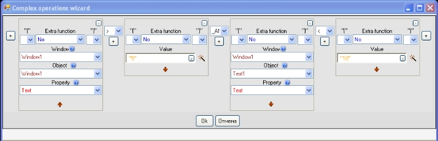

Collapse all
Collapse all Description
Description
Complex operations wizard is the most complex part of Algorithm environment, but it gives lots of potentials for developing a great variety of software solutions.
To open the wizard click a button with a magic wand on it. This button can be found to the right of text boxes (e.g. in Actions tab).
Let's learn the process of creating a complex action by the example of calculating how many years have gone from the year specified in the text box:
Here the string "Years have gone" is concatenated with the result of calculation, where the current year is subtracted out of the year specified in the text box (Window1.Text1.Text). For example, if in the text box you input "2000" and today is 2009, then the result of the complex operation produced in the wizard is to be: "Years have gone: -9", that's because "2000" - "2009" is "-9". If we press the button Ок, then the wizard would give us the result of its work. This is a complex operation, in our case: "Years have gone: " & (Absolute(Window1.Text1.Text) - _Useful objects._Date._Year(_Useful objects._Date._Today))
Now let's review each element of the wizard in details:
| 1 - Wizard blocks | The wizard consists of blocks which help to compose complex operations. The number of blocks is unlimited, you can add them by clicking button 2 and delete by clicking button 4. Each block have two states: a simple one - when particular data is input (as in the first block on the shot) and a complex state - when one can choose properties of the object (the second and third blocks on the shot). You can switch between two states by clicking button 6. |
| 2 - Addition of a block | This button adds a new block in the place near the button. |
| 3 - Parentheses arrangement | Each block can be separated with parentheses. There are left and right parentheses, their number is unlimited and the number of left ones can differ from the number of right ones. For example, if you need to create an action (("-2")+"3"), then in the first block (where the number "-2" is) you should specify two left parentheses and one right. And in the second block (where the number "3" is) you should specify just one right parenthesis. |
| 4 - Deletion of a block | This button deletes a block. |
| 5 - Additional function | For each block you can use additional function. All additional functions are common mathematical operations - root, sine, cosine, rounding, changing sign. As for the shot, in the block 2 the function absolute is used (this function makes a negative number positive in case something like "-2000" would be input). |
| 6 - Change of block state | Each block have 2 states: a simple one - when particular data is input (as in the first block on the shot) and a complex one - when one can choose properties of the object (the second and third blocks of the shot). By clicking this button you'll change the block state from simple to complex. |
| 7 - Blocks connection | All blocks are bound with a particular type of connection. Connection can be mathematical (addition, division, concatenation) and logical (unequally, more, less, _AND, _OR). In the given example we have a mathematical connection, i.e. blocks are connected with some mathematical operation. Here blocks 2 and 3 are bound by subtraction and the block 2 is a minuend and the block 3 is a subtrahend. Between block 1 and the difference of blocks 2 and 3 there is a plus, which means that they are connected with addition and the result of the action is a sum of summands of block 1 and (block 2 - block 3). Apart from mathematical connection there is also a logical connection (equal, unequally, more, less or equal). This type of connection is helpful in creating events and cycles. The result of condition is whether the condition is true or false. So if it is necessary to create an event, then logical operators are used which definitely indicate either "Yes", or "No". For example, expression "2" < "3" can be either a true condition, or a false one. There are no other variants. In the example it's true. Besides, if the condition is complex, then special logical operations are used: _AND and _OR. If two conditions are connected with _AND, then their mutual result would be "Yes" (i.e. taken together they would be a true condition) only if both condtions are true. For example, if we need to confirm that the number specified in the text box is more than 5 and less than 10, then in the wizard it looks like this:  Similarly to this the mutual result of two conditions connected with _OR would be a true condition even if one of the condition is true. So if you need to confirm that the number specified in the text box is less than 2 and more than 7, then in the wizard it looks like this: Window1.Window1.Text < "2" _AND Window1.Text1.Text > "7" |
See also